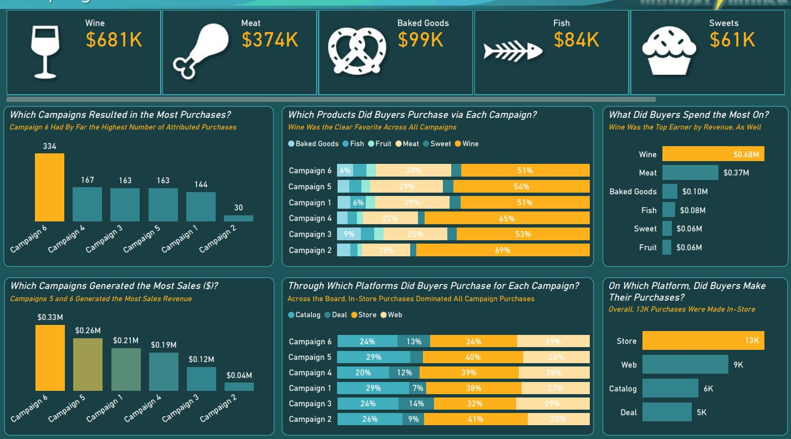
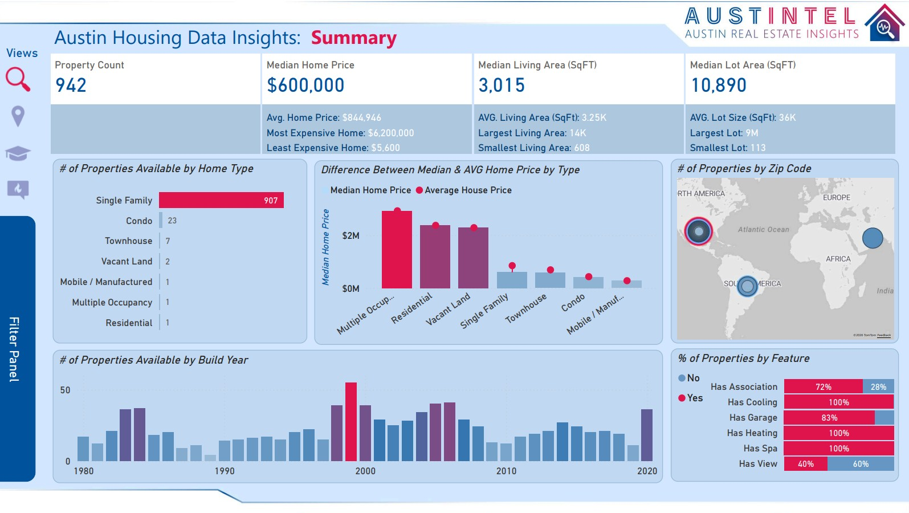
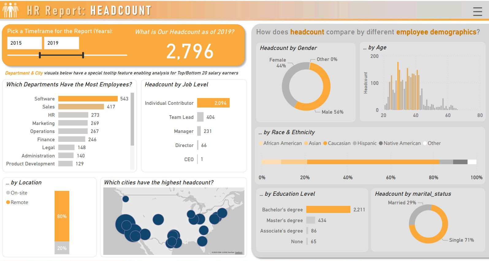
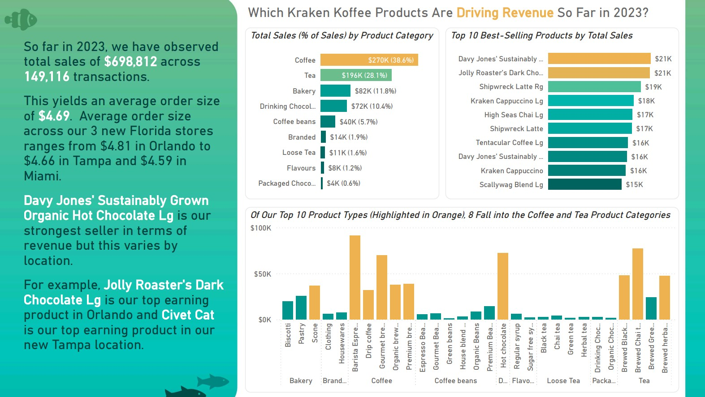

$ whoami
Muhammad Hanzala_
Data Analyst & Power BI Analytics Engineer.
I build executive dashboards, clean data models, KPI reports, and business intelligence solutions across retail, e-commerce, fintech, marketing, HR, and operations.
01.
About Me
I am a Microsoft Certified Power BI Data Analyst with hands-on experience building dashboards, KPI reports, data models, and reporting workflows for sales, marketing, inventory, finance, e-commerce, and verification teams.
My strength is turning messy business data into dashboards that people can actually use. I work with Power BI, DAX, SQL, Power Query, Salesforce, Dynamics 365, and Microsoft Fabric concepts including Lakehouse, Dataflow Gen2, Data Factory Pipelines, Direct Lake, and semantic model governance.
02.
Experience
Data Analyst @ Sapphire Retail Limited
Jul 2025 — Present
- Develop and maintain 10+ Power BI dashboards for sales, marketing, inventory, finance, and management teams.
- Reduced manual reporting time by approximately 35% through Power Query, scheduled refresh, and Power BI Service workflows.
- Build DAX measures for revenue, growth, CAC, retention, CLV, repeat purchase rate, and inventory performance.
- Design star schema models and implement RLS for regional and functional reporting access.
Associate Data Analyst @ Programmers Force
Feb 2025 — Jun 2025
- Analyzed KYC and identity verification data for the Shufti Pro team using SQL and BI reporting.
- Monitored AI/ML model performance, client-side errors, anomalies, and verification process issues.
- Performed data audits and validation checks that supported up to 8% uplift in verification performance.
- Built Power BI reports for business and technical stakeholders.
Software Engineer Intern @ Systems Limited
Mar 2024 — Oct 2024
- Supported Flutter application development and feature implementation in an agile environment.
- Analyzed requirements, fixed bugs, and improved application stability.
- Learned structured development practices that now support clean, reliable analytics delivery.
03.
Skills & Tools
A practical analytics stack from raw data to stakeholder-ready decisions.
Power BI Desktop
Power BI Service
DAX
SQL
Power Query
Star Schema
RLS / OLS
Dataflows
Microsoft Fabric
Azure Data Factory
Python
Pandas
Excel
Power Automate
A/B Testing
Data Storytelling
04.
Featured Projects
// Real dashboard case studies with clean visuals, business context, and PDF walkthroughs.

marketmindz.pbix
MKT
MarketMindz Campaign Analytics
Built a campaign dashboard showing purchases, revenue contribution, product preferences, channel behavior, and customer demographics.
- Campaign 6 generated the highest purchases with 334 attributed purchases.
- Wine led revenue at approximately $681K.

austin-housing.pbix
RE
Austin Housing Data Insights
Created a real estate dashboard for Austin properties with summary KPIs, home type analysis, maps, build-year trends, and feature comparisons.
- Analyzed 942 available properties with a $600K median home price.
- Tracked living area, lot area, zip code, and property feature trends.

hr-headcount.pbix
HR
HR Headcount & Demographics Report
Designed an HR analytics report covering headcount, job level, department, location, age, education, and employee demographics.
- Reported 2,796 employees for the selected 2019 timeframe.
- Software had the highest department headcount with 543 employees.

kraken-koffee.pbix
BI
Kraken Koffee Revenue Dashboard
Analyzed 149,116 transactions across three Florida stores with $698,812 in sales, product category revenue, top sellers, and location behavior.
- Coffee generated $270K, about 38.6% of total sales.
- Average order size was $4.69 across the new Florida stores.
05.
Certifications
// Validated expertise across the modern data stack.
06.
Why Work With Me
Business-first dashboards
I design dashboards around decisions, KPIs, and stakeholder questions, not just charts.
Clean data models
I use star schema thinking, DAX discipline, and quality checks so reports stay reliable.
Automation mindset
I reduce repetitive reporting using Power Query, scheduled refresh, dataflows, and service workflows.
Clear storytelling
I turn analysis into summaries, comparisons, and recommendations that non-technical teams can act on.
07.
FAQ
What kind of dashboards can you build?
Sales, marketing, HR, finance, inventory, e-commerce, operations, campaign analytics, and executive KPI dashboards.
Can you work with messy raw data?
Yes. I clean, transform, validate, and model raw data using Power Query, SQL, Excel, and Power BI data modeling practices.
Do you only design dashboards or also analyze insights?
I do both. I build the report and explain what the data means through KPIs, trends, segments, and business recommendations.
Can you help with Power BI Service and refresh setup?
Yes. I can publish reports, manage workspaces, set scheduled refresh, apply RLS, and improve report usability.
08. What's next?
Let’s build a dashboard people actually use.
Have a reporting problem, dashboard idea, or analytics role in mind? I’m ready to help turn your data into reliable insights.